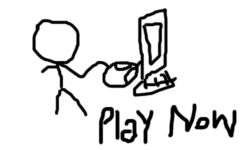

about
first tap to earn meme coin on internet computer
canister icdu6-uaaaa-aaaai-qpfaa-cai
tokenomics
100 billion total supply
5% devs
get $stik
connect plug wallet,tap to earn
connect
disclaimer
stik is an experimental project for Memethon on Internet Computer Protocol. This Memethon is organised by Blockseblock, focused on crafting MemeCoins within the Internet Computer Protocol (ICP) landscape, and is a community-led adventure rooted in fun and exploration. The MemeCoins born from this event are manifestations of creativity and a testament to the exploratory spirit of blockchain – they are not to be perceived as financial instruments or investment opportunities.